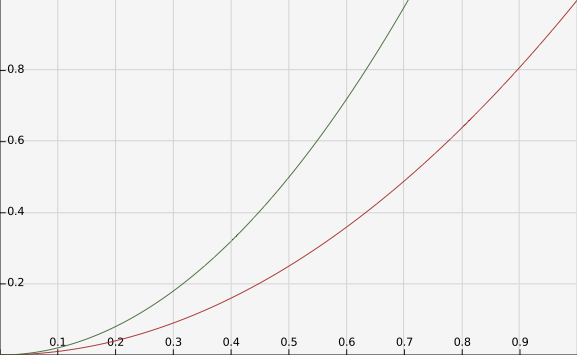

Sea \(\mathcal{R}=[a,b]\times[c,d]\) y
\(f:[a,b] \times [c,d]\to \mathbb{R}\) una función acotada tal que
\(f\) es integrable en \(\mathcal{R}\).
para cada \(y\in [c,d]\), la integral 1-dimensional
\(\int_a^bf(x,y)dx\) existe. Denotemos esta integral
por \(A(y)\).
Si la integral \(\int_c^d A(y)dy\) existe entonces
\[
\int_\mathcal{R}f = \int_c^d A(y)dy.
\]
Lo anterior se puede escribir
\[
\int_\mathcal{R}f = \int_c^d \left( \int_a^b f(x,y)dx \right)dy.
\]
Un resultado similar es válido si se supone que
para toda \(x\in [a,b]\), la integral
\(B(x):=\int_c^d f(x,y)dy\) existe y la función \(B(x)\)
es integrable. Es decir
\[
\int_\mathcal{R}f = \int_a^b \left( \int_c^d f(x,y)dy \right)dx.
\]
Corolario
Sea \(\mathcal{R}=[a,b]\times[c,d]\) y
\(f:[a,b] \times [c,d]\to \mathbb{R}\) una función continua.
Entonces \(f\) es integrable y
\[
\int_{\mathcal{R}}f(x,y)=\int_a^b \int_c^d f(x,y)dydx=\int_c^d \int_a^b f(x,y)dxdy
\]
Ejercicio
Para cada una de las siguientes funciones y
rectángulos
calcula \(\int_\mathcal{R}fdA\). Puedes suponer
que todas las funciones que se presentan
son integrables.
Sugerencia: si \(\mathcal{R}\) es un polígono en el
plano y \(f\) es igual a una constante \(c\) sobre \(\mathcal{R}\)
entonces \(\int_{\mathcal{R}f}=c * \textrm{área}(\mathcal{R})\)
El dominio de \(f\) es el que se encuentra entre la gráfica verde
(\(y= 2x^{2}\)) y la gráfica roja (\(y = x^{2}\)),

Tenemos que la condición del dominio es \(x^{2} \leq y \leq 2x^{2}\)
la cual es equivalente a \(\frac{\sqrt{y}}{\sqrt{2}} \leq x \leq \sqrt{y}\).
Entonces fijando \(y \in [0, 1]\) y tamando
\begin{equation*}
A(y) = \int_{0}^{1}f(x, y)dx
\end{equation*}
Por la regla de correspondecia de \(f\) simplificamos
\begin{eqnarray*}
A(y) & = & \int_{\frac{\sqrt{y}}{\sqrt{2}}}^{\sqrt{y}} x + 2y dx \\
& = & \frac{1}{2}\left(y - \frac{y}{2}\right) + 2y\left(\sqrt{y} -
\frac{\sqrt{y}}{\sqrt{2}}\right) \\
& = & \frac{y}{4} + \sqrt{2}\left(\sqrt{2} - 1\right)y^{\frac{3}{2}}
\end{eqnarray*}
Suponiendo que \(f\) es integrable, entonces por el ejercicio 12.5 tenemos
\begin{eqnarray*}
\int_{R} f & = & \int_{0}^{1} A(y) dy \\
& = & \int_{0}^{1} \frac{y}{4} + \sqrt{2}\left(\sqrt{2} -
1\right)y^{\frac{3}{2}} dy \\
& = & \frac{1}{8} + \frac{2\sqrt{2}(\sqrt{2} - 1)}{5}\\
& = & \frac{37 -16\sqrt{2}}{40}
\end{eqnarray*}
Sean \(f:[a,b]\to \mathbb{R}\),
\(g:[c,d]\to \mathbb{R}\) dos funciones continuas,
denota \(\mathcal{R}=[a,b]\times [c,d]\) y define
\(h:\mathcal{R}\to \mathbb{R}\) por \(h(x,y)=f(x)g(y)\).
Expresa la integral \(\int_{\mathcal{R}} h(x,y)\)
en términos de las integrales de \(f\) y de \(g\).
Ejercicio
Calcula la integrales de las siguientes funciones.